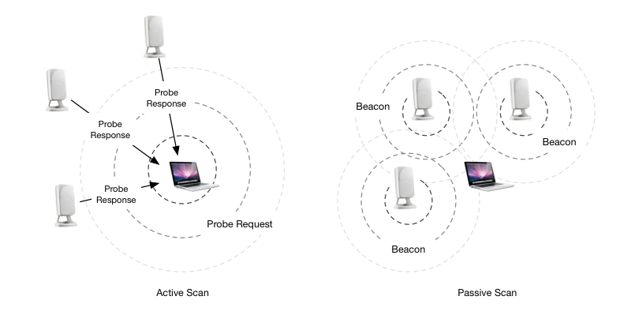
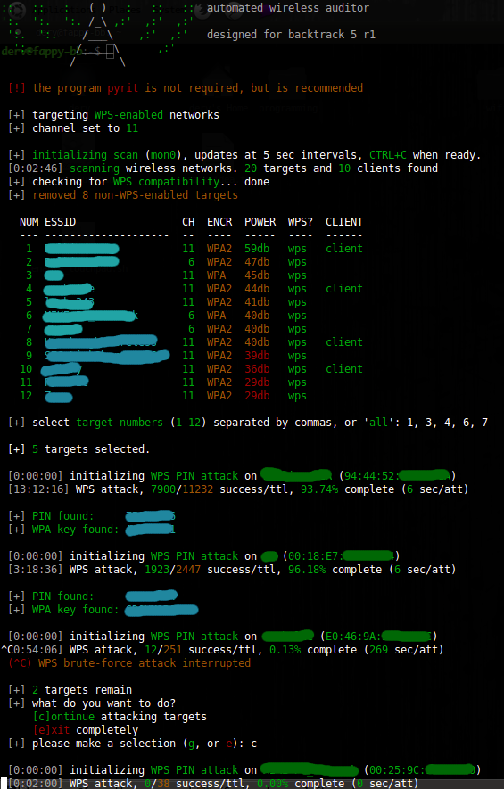
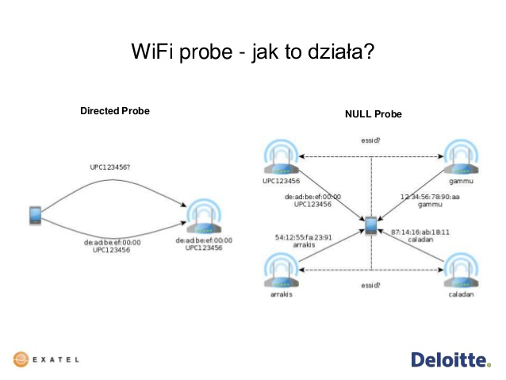
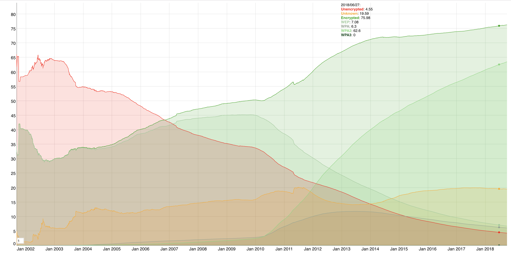

Hackování Wi-Fi
Filip Štaffa
filip.staffa@gmail.com
Wi-Fi
- Bezdrátová komunikace
- Bezlicenční pásmo
- Standard IEEE 802.11

Problémy
- Každý může odposlouchávat
- Management frame lze spoofovat
Deauthentiction attack
Co je vidět
- Všechny access pointy včetně MAC adres a připojených klientů
- Klienti kteří maji zapnutou WiFi

Probe requesty
- Lze sledovat klienty pomocí MAC adresy
MAC address randomization
Proč hackovat
- Internet zadarmo
- Přístup do intranetu
- Odposlouchávání komunikace
- Man In The Middle
Nástroje
- WiFi karta schopná monitor módu
- Linux (Kali)

Skrytá Wi-Fi
- SSID lze snadno zjistit
- Narušuje soukromí

Filtrování MAC adres
- Nepraktické když se někdo potřebuje připojit
- MAC adresy jsou veřejné
macchanger -m 00:d0:70:00:20:69 eth0
WEP
- Od roku 1997
- Stačí zachytit dostatek komunikace
- Prolomení trvá cca 10 minut bez ohledu na heslo
- Komunikaci lze vygenerovat i bez klienta
WPA-PSK/WPA2-PSK
- Od roku 2004
- TKIP a AES verze
- Sdílený klíč pro všechny klienty
- Nelze MITM attack bez hesla
- S heslem lze číst veškerou komunikaci v síti
WPS
- WiFi Protected Setup
- Má zjednodušit připojení zařízení
- 8 číslic
- Online útok
- 100 000 000 možností
- Při 10 pokusech za sekundu v průměru 2 měsíce
- 1 check digit
- 7 efektivních číslic
- 10 000 000 možností
- Při 10 pokusech za sekundu v průměru 6 dnů
- Lze hádat první 4 číslice a další 3 zvlášt
- 11 000 možností
- Při 1 pokusu za 5 sekund v průměru 8 hodin
Pixie Dust
- Při chybné implementaci lze heslo crackovat offline
- 10 sekund
KRACK
- Možnost vnutit klientovi i vysílači vlastní šifrovací klíč
- Lze odposlouchávat komunikaci
- V určitých implementacích lze modifikovat komunikaci
Nová zranitelnost
- Nepotřebuje uživatele
- Zneužívá roaming
WPA 2 Enterprise
- RADIUS server
- Při správné implementaci téměř neprolomitelné
WPA 2 Enterprise
- Server neprokazuje klíentovi znalost hesla
- Bez důvěryhodných certifikátů lze snadno napadnout MITM
WPA 3
- 2018
- Forward Secrecy
- Šifrovaná komunikace i na otevřených sítích
- Protected management frames

Shrnutí
- Zapnutá WiFi na mobilu umožňuje sledování
- Skrytá síť i filtrování MAC adres moc nepomáhá
- WEP není bezpečný
- WPA 2/AES bez WPS s KRACK patchem a silným heslem je bezpečné
- VPN na veřejné sítě
- WPA 2 enterprise je bezpečný když je správně nakonfigurovaný